Unidad 1: Fundamentos Físicos - Lección 8
En la lección anterior aprendiste a usar la Protoboard. Ahora necesitamos darle vida (energía). Pero cuidado: la electricidad que sale de la pared es salvaje (AC) y tus chips digitales necesitan paz y estabilidad (DC). Hoy aprenderemos a domar la energía, a usar el cargador correctamente y conoceremos al componente encargado de "planchar" las arrugas de la corriente: el Condensador.
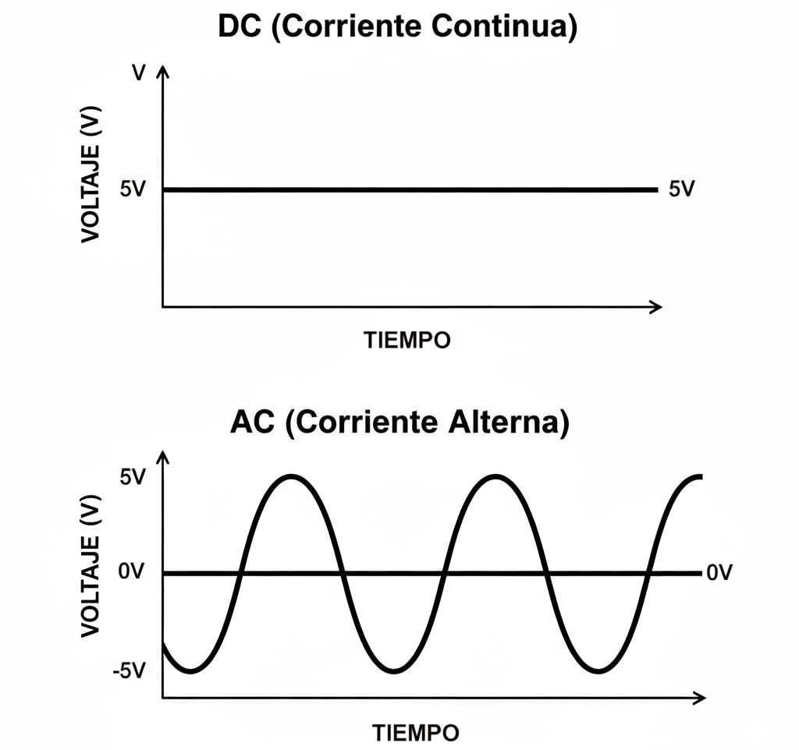
Fig. 1: La DC es estable (5V). La AC oscila (+120V a -120V).
Objetivo pedagógico: Que los niños comprendan la diferencia entre AC y DC mediante movimiento corporal, SIN exponerlos a voltajes peligrosos.
Materiales: Cinta adhesiva de colores, espacio en el aula.
Preparación:
Dinámica: "Caminen siempre en la misma dirección, sin detenerse ni retroceder". Esto simula la corriente continua: flujo constante en un solo sentido.
Preparación: Marca dos líneas paralelas en el piso (A y B).
Dinámica: "Ahora los electrones bailan: un paso hacia A, un paso hacia B, un paso hacia A, un paso hacia B...". Los niños oscilan entre las dos líneas sin avanzar.
Lección clave: "La AC no viaja, ¡solo vibra en su lugar! Por eso no sirve para nuestros chips, que necesitan electrones que realmente lleguen a su destino".
NUNCA uses el enchufe de la pared para demostraciones en clase. La AC de 120V/220V puede matar a un niño en milisegundos. Todas las actividades con corriente deben usar pilas de 3V, 5V o 9V (baja tensión segura).
Para mostrar AC "de verdad", usa un osciloscopio virtual en la computadora o un video educativo pregrabado. La curiosidad no justifica el riesgo.
Aquí hay un secreto técnico: Lo que llamamos "Cargador" en realidad NO es un cargador.
La cajita que enchufas a la pared es una Fuente de Alimentación Regulada (Power Supply).
¿Por qué nos sirve esto? Porque al ser una fuente de 5V estable, ¡es perfecta para alimentar nuestra protoboard y nuestros chips lógicos sin dañarlos!
Sin embargo, a veces la conversión de AC a DC no es 100% perfecta y queda un pequeño "temblor" o ruido en la línea.
¿Cómo quitamos ese temblor para que la lógica no falle? Usamos un Condensador (Capacitor).
Imagina que el cargador es una manguera que a veces echa chorros fuertes y a veces débiles. El condensador es un balde conectado a la manguera.
Resultado: El flujo de agua hacia tus chips es suave y constante.
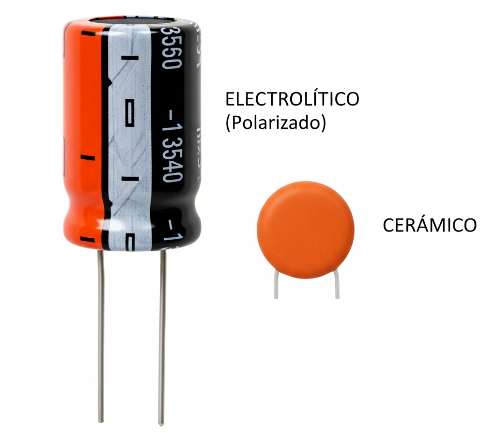
Fig. 2: Izquierda: Electrolítico (¡Cuidado con la polaridad!). Derecha: Cerámico.
Convertir la electricidad de la pared en algo que tus chips puedan "comer" sin morir no es un proceso de un solo paso. Es un trabajo en equipo entre tres componentes esenciales:
Toma los 120V o 240V de la pared (que son como un gigante) y los baja a un nivel manejable, como 9V o 12V. Pero el gigante sigue "temblando" (AC).
Elimina el Rizado (Ripple). Ese temblor que queda tras la conversión. El condensador "aplana" las olas para que la corriente fluya casi recta.
Es el Guardián Final. No importa si a la entrada le llegan 9V o 12V, él garantiza que a tus chips les lleguen exactamente 5.0V constantes. Sin él, un pico de voltaje freiría tu lógica digital.
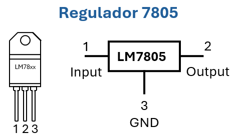
Fig. 3: El 7805 por fuera y por dentro. Observa que el orden de los pines es vital: 1. Entrada (voltaje sucio), 2. Salida (5V puros) y 3. GND (el ancla común).
Fig. 3: De la "tormenta" AC de la pared a la "paz" de los 5V constantes.
Para que los niños entiendan por qué necesitamos tres aparatos para tener energía, usa la analogía de cómo llega el agua potable a su casa:
Tip pedagógico: Haz que los niños dibujen este "camino del agua" y le pongan los nombres de los componentes electrónicos debajo. Así, la próxima vez que vean un condensador, verán un filtro de pureza.
Así como el LED tiene su "mapa" con triángulo y barra, el condensador tiene símbolos que nos cuentan su historia:
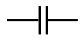
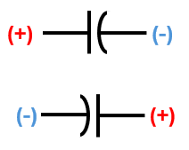
Recuerda nuestra analogía del condensador como un balde de agua:
Ahora, cuando veas "—| |—" en un diagrama, sabrás que es un condensador, y podrás "leer" su historia: dos placas separadas por un aislante, listas para almacenar energía.
Observa este fragmento de esquemático:
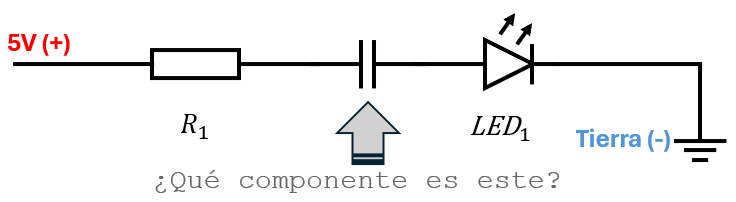
¡Correcto! Es un condensador no polarizado.
¿Te interesa la medicina? El corazón humano funciona con pulsos eléctricos (DC) muy pequeños (milivoltios). Cuando un médico usa un Electrocardiógrafo (ECG), está midiendo voltaje.
El problema es que la red eléctrica de la pared (AC) genera tanto ruido que puede tapar la señal del corazón. Por eso, los equipos médicos usan filtros y condensadores avanzados para limpiar la señal, tal como estamos aprendiendo a limpiar la energía de nuestros chips.
En un circuito en paralelo, el voltaje es igual en todas las ramas, pero la corriente se reparte. ¡Es como un río que se divide: el cauce más ancho (menos resistencia) recibe más agua!
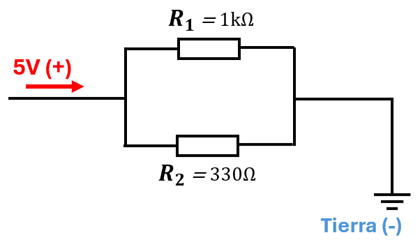
¿Por qué el voltaje es igual en ambas ramas?
Porque ambas resistencias están conectadas directamente a los mismos dos puntos: el positivo de la fuente (5V) y el negativo/GND (0V).
Imagina dos escaleras que bajan del mismo piso 5 al mismo sótano:
¿Cuál es la diferencia de altura entre el piso 5 y el sótano?
¡Exactamente la misma para ambas escaleras! Lo único que cambia es cuánto te cuesta bajar (la corriente).
¿Cómo calcularlo? ¡Solo necesitas la Ley de Ohm!
Como el voltaje es igual (5V) en ambas ramas:
• I₁ = 5V / 1000Ω = 5 mA (rama de mayor resistencia)
• I₂ = 5V / 330Ω = 15.15 mA (rama de menor resistencia)
• Itotal = 5 mA + 15.15 mA = 20.15 mA
💡 Regla de oro: La corriente se divide inversamente proporcional a las resistencias:
• Más resistencia → menos corriente
• Menos resistencia → más corriente
| Caso | Corriente |
|---|---|
| R₁ = R₂ | I₁ = I₂ (mitad cada uno) |
| R₂ = ½ R₁ | I₂ ≈ 2 × I₁ |
| R₂ = ⅓ R₁ | I₂ ≈ 3 × I₁ |
¿Sabías que aunque los divisores de corriente no existen "reales" en la naturaleza, podemos encontrar analogías poderosas que nos ayudan a entender este concepto?
La sangre que bombea el corazón se divide entre las arterias y capilares. Los vasos más anchos (menor resistencia) reciben más flujo sanguíneo, mientras que los estrechos (mayor resistencia) reciben menos. Es como un divisor de corriente: la "corriente" (sangre) se reparte inversamente proporcional a la resistencia de cada vaso.
Cuando un río se bifurca, el agua elige el camino más fácil: el cauce más ancho y profundo recibe más agua, mientras que el estrecho con rocas recibe menos. Esta es la misma regla que sigue la corriente eléctrica en paralelo.
No digas: "En el cuerpo humano hay divisores de corriente".
Di mejor: "Imagina que tu sistema circulatorio es como un divisor de corriente: el corazón es la fuente, las arterias son las ramas en paralelo, y la sangre (corriente) se reparte según la resistencia de cada vaso. Esta analogía nos ayuda a entender por qué la corriente prefiere el camino de menor resistencia".
🌟 Resumen práctico:
• En serie: La corriente es igual, el voltaje se reparte.
• En paralelo: El voltaje es igual, la corriente se reparte.
¡Memoriza esta regla y nunca te confundirás!
Para que tus futuros circuitos (Unidades 2, 3 y 4) funcionen, debes respetar estas leyes sagradas:
En DC, Rojo es (+) y Negro es (-). Nunca los cruces. Un chip conectado al revés muere instantáneamente.
Si usas dos fuentes de energía (ej: el USB para los chips y una pila de 9V para un motor), debes unir todos los cables Negativos (GND).
¿Por qué? Porque todos los componentes necesitan estar parados sobre el mismo "suelo" (0 Voltios) para entenderse. Memoriza esto: sin Tierra Común, los sensores fallan.
Cuando lleguemos a la Lección 13 (Diseño de Alarmas) y a la Lección 22 (Sistemas de Seguridad), verás que sin Tierra Común, tus sensores le mentirán a tu circuito.
Si usas un cable USB cortado, verás 4 hilos internos. Aquí está el código de colores universal:
¿Qué hago con el Blanco y el Verde?
Córtalos más cortos que los demás y, si puedes, ponles un poquito de cinta aislante. No los unas entre sí ni dejes que toquen el rojo o el negro. Son para transmitir datos, y nuestros circuitos de este curso no "hablan" USB.
Si conectas tu fuente en un país con voltaje distinto (como los 230V de Europa o los 100V de Japón), ¡no explota! (siempre que sea moderna).
Revisa la letra pequeña de tu adaptador. Casi seguro dice:
INPUT: 100-240V ~ 50/60Hz
Esto significa que es Universal:
Lo único que necesitas: Un adaptador de plástico simple (sin electrónica) porque la forma de los huecos de la pared (clavijas) cambia en cada país.
Flashback a la Lección 1: ¿Recuerdas que los Amperios (A) miden la cantidad de electrones disponibles? Un LED consume poquitico (0.02 A), pero un cargador puede ofrecer mucho (2 A).
¡No te asustes! Muchos piensan que si el cargador tiene muchos Amperios, "empujará" demasiada corriente y quemará el circuito. Es un mito.
La Analogía del Buffet: Un cargador de 2A es como un restaurante con comida para 200 personas. Si tú entras solo (tu pequeño circuito LED), comes lo de una persona y ya. ¡El restaurante no te obliga a comerte la comida de los otros 199!
Pero... ¿qué pasa si accidentalmente abres todas las puertas del restaurante? Entrarían 200 personas de golpe y sería un caos.
Lo genial: Este guardia es tan discreto que cuando solo entra 1 persona (tu LED normal), casi no lo notas. Pero cuando hay un problema, él toma el control y evita el desastre.
Conclusión: Mientras sea de 5V, sirve cualquier cargador de 0.5A, 1A, 2A o más. Entre más amperios tenga, más "sobrado" y frío trabajará.
En este curso, alimentaremos todo con 5 Voltios DC (USB). Es un voltaje seguro.
Veamos un circuito completo que combina todo lo aprendido.
Antes de tocar un cable, los ingenieros calculan. ¿Por qué? Para evitar:
Tenemos un adaptador USB de 5V, 2A ¿Será suficiente para nuestro circuito?
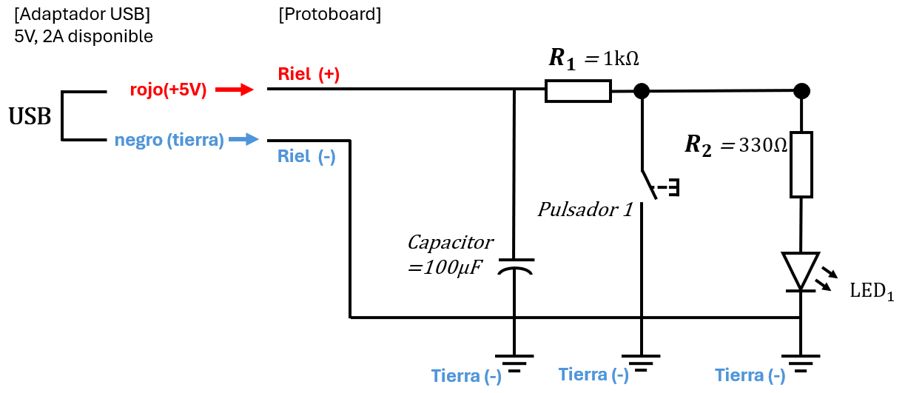
El circuito tiene dos estados claramente definidos:
💡 El capacitor de 100µF juega un rol crucial como estabilizador de voltaje:
En resumen: El capacitor asegura que tu circuito funcione de manera limpia, estable y predecible, independientemente de pequeñas imperfecciones en la fuente de alimentación.
| Componente | Función |
|---|---|
| USB 5V | Fuente de energía regulada |
| Capacitor 100µF | Filtrado y estabilización de voltaje |
| R₁ (1kΩ) | Limita corriente, crea divisor de voltaje |
| Pulsador | Control on/off del LED (en paralelo con el LED) |
| R₂ (330Ω) | Limita corriente del LED |
| LED | Indicador visual |
| TIERRA común | Referencia y retorno de corriente |
🟢 Sin presionar el pulsador (LED ENCENDIDO)
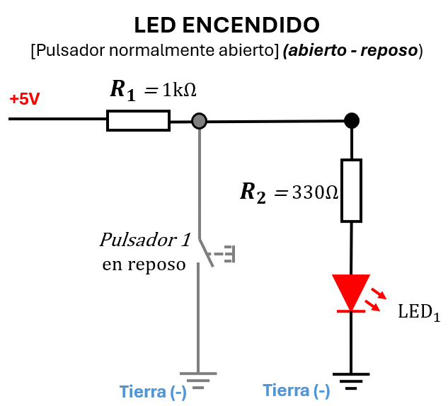
Divisor de voltaje en acción:
• El voltaje se reparte entre R₁ y R₂
• V_disponible = 5V - 1.9V (del LED) = 3.1V
• V_R₁ = 3.1V × (1000Ω/1330Ω) = 2.33V
• V_R₂ = 3.1V × (330Ω/1330Ω) = 0.77V
Corriente calculada: I = 3.1V / 1330Ω = 2.33 mA (corriente segura para el LED)
Papel del capacitor: Almacena energía durante los picos y la suministra durante los valles, manteniendo el voltaje estable.
🔴 Presionando el pulsador (LED APAGADO)
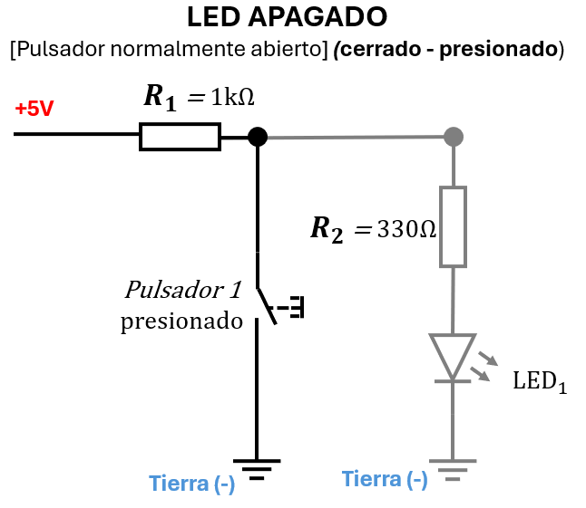
Divisor de corriente en acción:
• El pulsador ofrece un camino de menor resistencia
• La corriente prefiere el camino del pulsador (casi 0Ω)
• Mínima corriente fluye por el LED
Corriente calculada: I_total = 5V / 1000Ω = 5 mA (fluye por R₁ y pulsador)
Papel del capacitor: Continúa filtrando el voltaje, manteniendo estabilidad durante el cambio de estado.
Análisis completo de los dos estados de operación
| Estado | Configuración del Circuito | Corriente (I) | Estado LED |
|---|---|---|---|
|
Reposo
Pulsador Abierto
|
Serie: R₁ + R₂ + LED
5V ──[1kΩ]──[330Ω]──[LED]── GND
|
2.33 mA |
💡 ✅ ON
|
|
Presionado
Pulsador Cerrado
|
R₁ en cortocircuito
5V ──[1kΩ]──[Pulsador≈0Ω]── GND
|
5.0 mA |
⚫ ❌ OFF
|
|
Fuente: Adaptador USB 5V, 2A |
|||
Nuestro circuito usa entre 2.3 mA (LED encendido) y 5 mA (pulsador presionado).
Cálculo: 2000 mA ÷ 5 mA = 400 circuitos | (5 mA × 400 = 2000 mA = capacidad total)
¿Notaste que en el circuito completo, cuando presionas el pulsador, creas un paralelo práctico entre dos caminos?
Como aprendiste en la Lección 5 al estudiar el reparto de corriente en paralelo, la corriente se divide inversamente proporcional a las resistencias. Aquí la diferencia es tan grande (0Ω vs 350Ω) que >99.9% de la corriente fluye por el pulsador y el LED recibe tan poca que se apaga.
Cuando expliques este circuito a tus estudiantes, no digas "el LED se apaga porque la corriente prefiere el pulsador". Mejor di: "Cuando el pulsador se cierra, creamos dos caminos en paralelo. Como aprendimos en la quinta lección, el agua (corriente) siempre busca el camino más fácil. El pulsador es como un túnel ancho sin obstáculos, mientras que el LED+resistencia es como un camino estrecho con piedras. ¿Por dónde crees que fluirá más agua?"
¿Por qué no calculamos la corriente exacta que fluye por el LED cuando el pulsador está presionado?
Respuesta: Técnicamente sí podríamos calcularla usando la fórmula del divisor de corriente, pero no lo hacemos porque:
Esta es una lección poderosa para tus futuros estudiantes: saber cuándo un cálculo es necesario y cuándo basta con un razonamiento sólido es parte esencial del pensamiento técnico.
💡 La razón de los cálculos:
Sin calcular, podrías usar una resistencia de 10Ω en lugar de 330Ω. Resultado: el LED recibiría ~50 mA en lugar de 15 mA → se quema en segundos. 🔥
Los cálculos son tu "seguro de vida" antes de conectar la batería.
Antes de cerrar esta lección, quiero que observes con atención el circuito que acabas de analizar. No es solo un LED que se apaga al presionar un botón. Es algo mucho más profundo...
Observa este patrón:
💡 ¿Notaste algo extraño? ¡El LED hace lo OPUESTO a lo esperado!
A este circuito le daremos un nombre que recordarás para siempre: "El Circuito Inversor".
¿Por qué "Inversor"? Porque invierte la lógica natural. Cuando actúas (presionas), el resultado es lo contrario de lo esperado (se apaga). Cuando no actúas (suelto), el resultado es activo (encendido).
En la Lección 9 descubrirás que este comportamiento tiene un nombre formal en el lenguaje de las computadoras. Pero por ahora, guárdalo en tu memoria como "El Circuito Inversor".
Este circuito que acabas de analizar es el puente entre la electricidad y la lógica. Hasta hoy, todo lo que has hecho es física: voltaje, corriente, resistencia.
Pero este circuito introduce algo nuevo: una regla de comportamiento. Una relación causa-efecto que no es lineal, sino inversa.
Memoriza estas dos frases:
En la próxima lección (Laboratorio 1), te pediré que reconstruyas este circuito y que le des un nombre formal. Ya lo conoces. Ya lo analizaste. Ahora solo falta nombrarlo.
"Reconstruir el Circuito Inversor y descubrir su nombre secreto en el lenguaje de las computadoras"
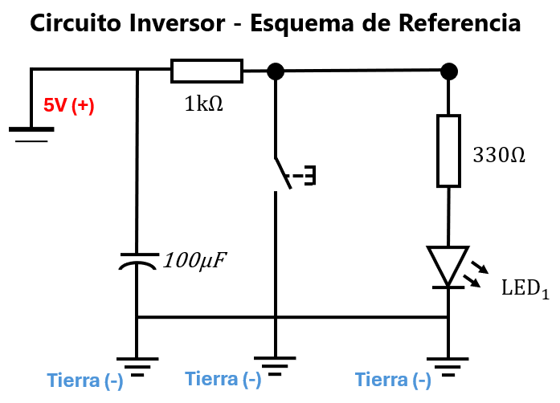
Estado 1: Pulsador ABIERTO → LED = ENCENDIDO (1)
Estado 2: Pulsador CERRADO → LED = APAGADO (0)
El circuito que analizaste en la Lección 8: cuando el pulsador está abierto, el LED está encendido (1); cuando está presionado, el LED se apaga (0).
Recomendado para Grado 7°
¿Sabías que la electricidad de la pared "tiembla"? Descubre la diferencia entre AC y DC y conoce al condensador, el componente que actúa como un balde de reserva.
Recomendado para Grado 10°
Análisis profundo de la "Triple Alianza" (7805 + Condensadores). Aprende a domar la energía para alimentar chips sensibles y desmiente los mitos sobre el amperaje de las fuentes.
Nota: Se requiere cuenta de Google para acceder al asistente inteligente.
Responde estas preguntas para asegurarte de que dominas los conceptos técnicos y estás listo para enseñarlos en tu futura aula:
Razón técnica: La AC permite cambiar voltajes fácilmente con transformadores. Para enviar energía a 100 km, subimos el voltaje a 500,000V (menos pérdidas por calor). Al llegar a tu casa, lo bajamos a 120V/220V con otro transformador.
Los chips necesitan DC porque su lógica interna depende de niveles de voltaje estables: 0V = "apagado" (0 lógico), 5V = "encendido" (1 lógico). Si el voltaje oscila como en AC, el chip no puede distinguir entre 0 y 1.
Para tu futura aula: Usa la analogía del "camión de mudanzas": "La AC es como un camión que sube y baja por una montaña para llegar lejos con poca gasolina. La DC es como un carrito de supermercado: lento pero estable para mover cosas pequeñas".
Respuesta técnica: El voltaje (5V) es IMPUESTO por el cargador. La corriente (amperios) es PEDIDA por el dispositivo. Tu teléfono solo "toma" los 0.5A que necesita, aunque el cargador pueda ofrecer 2A.
Analogía del buffet: "El cargador es un restaurante con comida para 200 personas. Tu teléfono es un niño que solo come un plato. El restaurante no lo obliga a comer más; él decide cuánto tomar".
Advertencia crítica: Esto solo aplica a fuentes reguladas (como cargadores USB). ¡Nunca conectes un LED directo a una batería sin resistencia! Allí sí hay peligro porque no hay regulación de corriente.
Materiales por pareja:
Procedimiento:
Lección: "El condensador es como un balde que se llena y vacía despacio. Suaviza los cambios bruscos de energía".
Seguridad: Usa solo pilas de 3V. Los condensadores de 1000µF a 3V son completamente seguros (no explotan). Nunca uses condensadores grandes (>10,000µF) ni voltajes altos (>12V) en el aula.
Explicación técnica: Todos los componentes necesitan compartir el mismo punto de referencia de 0 voltios para "entenderse". Si el sensor usa GND_A y el motor usa GND_B, ambos puntos pueden tener voltajes ligeramente diferentes, causando lecturas erróneas.
Metáfora para niños: "Imagina dos edificios: el Edificio A dice que el piso 1 está a 0 metros sobre el mar. El Edificio B dice que su piso 1 está a 5 metros sobre el mar. Si no unes sus cimientos (tierra común), cuando el Edificio A dice 'sube al piso 3', el Edificio B no sabe si son 3 metros o 8 metros".
Regla de oro: Siempre une todos los cables negros (GND) entre sí, incluso si vienen de fuentes diferentes. Esto crea un "suelo común" para todo el circuito.
Lo que sucede: A 5V, un condensador electrolítico pequeño (<1000µF) probablemente no explotará, pero:
¿Es peligroso? A 5V con condensadores pequeños: NO. Pero a 12V+ o con condensadores grandes (>10,000µF): SÍ (pueden explotar con fuerza suficiente para lanzar fragmentos de plástico).
Prevención en el aula:
Actividad: "El Experimento del Humito Mágico (Simulado)"
Materiales por pareja: 1 LED, 1 pila CR2032, 1 resistencia de 330Ω, hoja con dibujos de circuitos.
Protocolo (SEGURO - sin dañar componentes):
Objetivo pedagógico: Los niños aprenden la regla de seguridad SIN destruir componentes ni correr riesgos. La curiosidad se satisface con video profesional, no con experimentación peligrosa.
Regla de oro para el aula: "Nunca destruyas componentes para enseñar. Usa videos profesionales para mostrar fallos. La seguridad siempre primero".
Hasta esta lección, todo ha sido analógico: voltajes que suben y bajan, corrientes que fluyen, resistencias que frenan. La electricidad se comporta como un río: continuo, variable, impredecible en sus matices.
Pero el circuito inversor que acabas de estudiar introduce algo revolucionario: discreción. Solo hay dos estados posibles:
Esta dualidad (encendido/apagado, 1/0, verdadero/falso) es la base de todo el mundo digital. Y tú acabas de construir tu primer circuito que piensa en binario.
En la Lección 9, daremos nombre a este pensamiento.
Como futuro docente, aprenderás a usar la IA Generativa para potenciar tu pensamiento, no para reemplazarlo. Esta tarjeta te guía para construir prompts éticos que te ayuden a resolver dudas específicas de cada lección.
Resume CON TUS PALABRAS lo aprendido. Ej: "en electrónica, AC es corriente que oscila (como la de la pared) y DC es corriente constante (como la de pilas y cargadores), y que los condensadores actúan como 'tanques de reserva' que filtran el ruido y estabilizan el voltaje."
Plantea una DUDA ESPECÍFICA o aplicación. Ej: "por qué los condensadores electrolíticos tienen polaridad y qué pasa si se conectan al revés en un circuito de 5V."
Define TU AUDIENCIA (edad/curso). Ej: "a estudiantes de grado 8° que nunca han visto un condensador físico."
Pide retroalimentación crítica. Ej: "al explicar por qué no se puede conectar un LED directo a una fuente de 5V sin resistencia, aunque la fuente sea de 'bajo amperaje'."
"Comprendí que la corriente alterna (AC) de la pared no sirve directamente para alimentar circuitos digitales, por eso usamos fuentes que la convierten a corriente continua (DC) de 5V. También entendí que los condensadores actúan como 'tanques de reserva' que se cargan y descargan para suavizar las fluctuaciones de voltaje, y que los electrolíticos tienen polaridad mientras que los cerámicos no. Quiero saber: si diseño un circuito con un motor DC pequeño que consume 500mA y lo alimentó con una fuente de 5V, ¿necesito un condensador? Si es así, ¿de qué valor y cómo lo conecto? Explícame como si fuera a enseñárselo a mis futuros estudiantes de grado 9°, usando una analogía con el sistema de agua de una casa. Incluye un error común que los niños suelen cometer al conectar condensadores electrolíticos, especialmente confundiendo la pata positiva con la negativa."
¡Ya dominas los cálculos! Sabes por qué el capacitor estabiliza, cómo se reparte el voltaje en serie y por qué la corriente elige el camino más fácil en paralelo.
Pero... ¿y si te dijera que este circuito que acabas de analizar esconde un superpoder?
En la próxima lección lo construirás con tus propias manos (en físico o en Tinkercad). Verás cómo:
Ese pulsador que apaga tu LED cuando lo presionas... no es magia. Es el primer paso de un lenguaje secreto que los electrones usan para pensar. Un lenguaje de solo dos palabras:
¿Listo para descubrir el "superpoder" escondido en tu primer circuito?